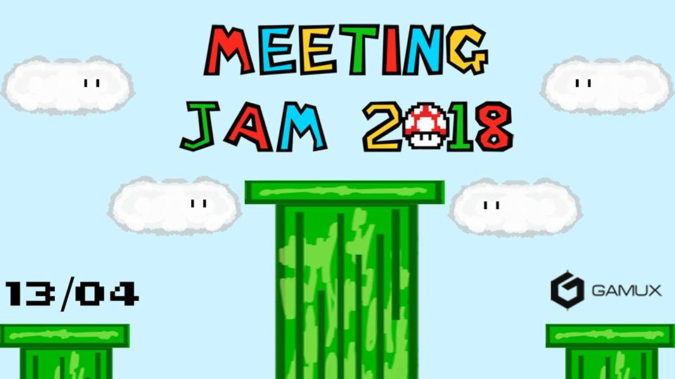
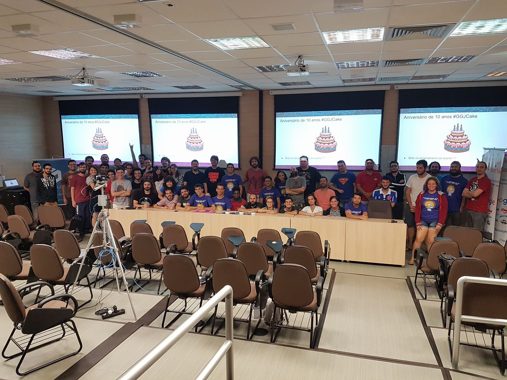
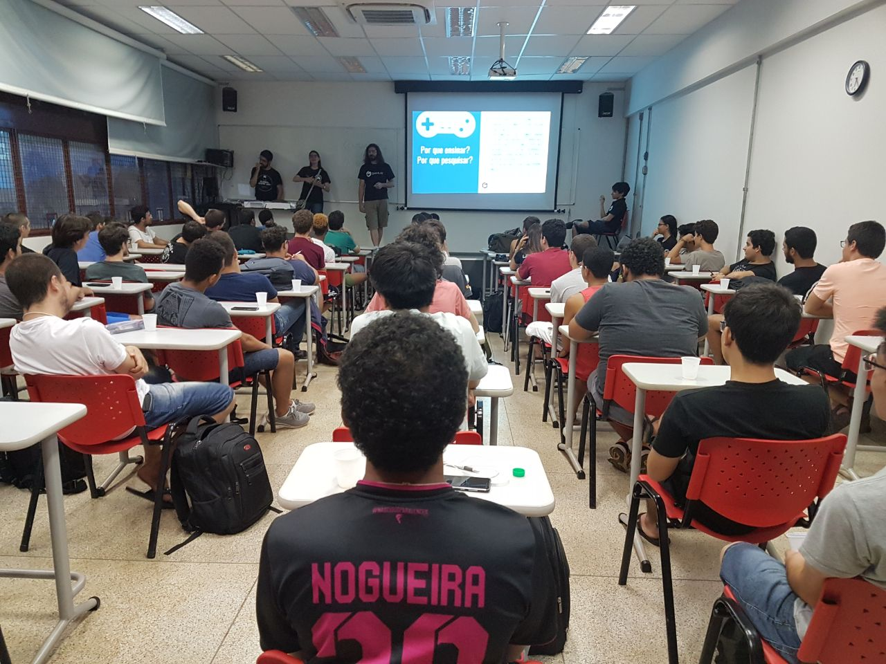
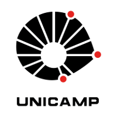
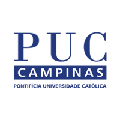
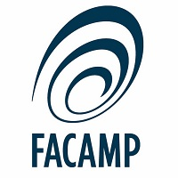

O Gamux é um grupo de pesquisa e desenvolvimento de jogos organizado pelos próprios estudantes com sedes na Unicamp, PUC Campinas e Facamp.
Nosso objetivo é prover suporte à comunidade de desenvolvedores e cultura de jogos nas universidades da região de Campinas desenvolvendo jogos, projetos de pesquisa e sediando game jams e palestras relacionadas à área.
|
Unicamp Quarta das 17h45 às 18h45 Sala 353 do Instituto de Computação |
Puccamp Sexta às 13h15 a cada 15 dias Sala Adm14 CLC |
Facamp Segunda das 12h às 13h30 Lab4 - Facamp |
|---|
 |
|---|

Nos dias 26, 27 e 28 de janeiro, o Gamux sediou mais uma edição da Global Game Jam em parceria com o Microsoft Innovation Center de Campinas! Contamos com mais de 80 participantes, jogos incríveis e encerramos o evento com um bolo de aniversário comemorando os 10 anos de Global Game Jam! Veja aqui a apresentação final.
|
|

Dia 15 de março a sede da Unicamp realizou uma palestra para recepcionar os calouros dos cursos de Ciência e Engenharia de Computação da Unicamp explicando toda a organização, projetos e pesquisas do Gamux.
|
|---|
|  |  |  |
|---|


 Dia 17 de fevereiro, o Gamux esteve no
Dia 17 de fevereiro, o Gamux esteve no